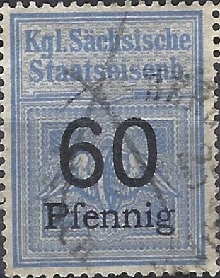
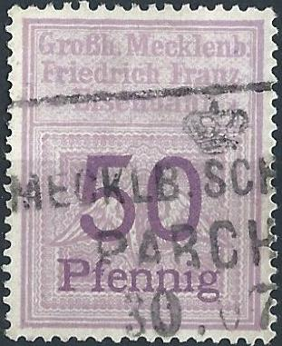
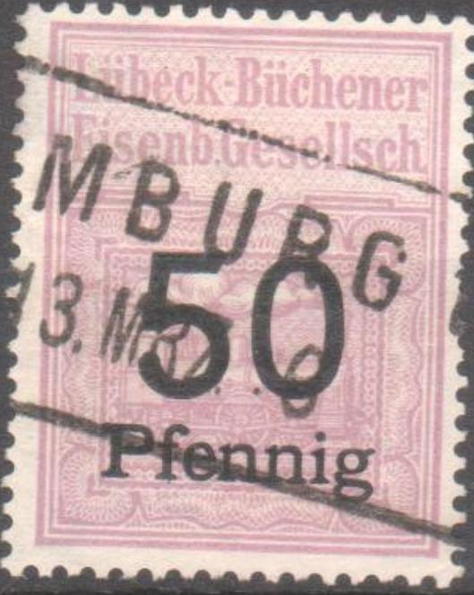
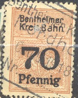
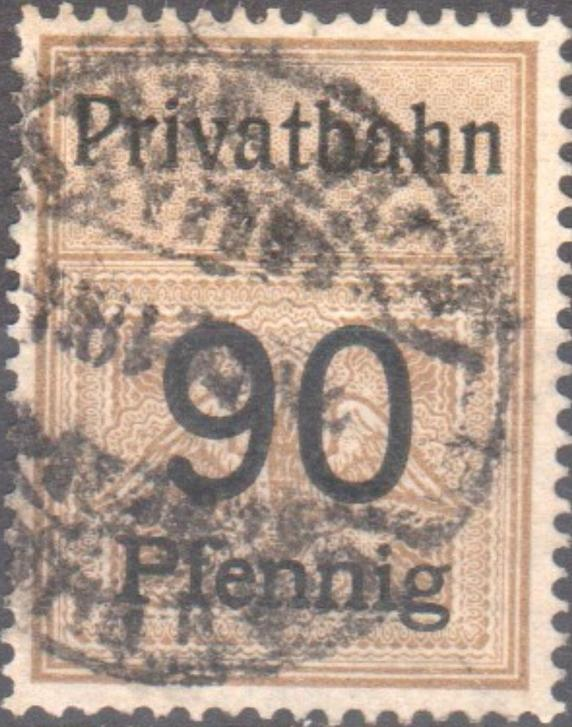

{kind=link}

Kgl. Sachsische Staatseisenb
Return To Catalogue - Germany railway stamps, part 1 - Germany Overview
Note: on my website many of the
pictures can not be seen! They are of course present in the
catalogue;
contact me if you want to purchase it.
Many railway stamps exist in Germany. I will present the ones I have seen here, others exist. The book by F.Jünke 'Die deutschen Eisenbahnmarken' has a lot of information concerning these stamps. According to this book, the first railway stamps appeared in 1876 and the last ones towards 1945. The first railway stamps were issued by the Hessische Ludwigs Eisenbahn Gesellschaft.
Germany railway stamps, part 1

Kgl. Sachsische Staatseisenb
Railway stamps for Saxony:
Inscription 'Kgl. Sachsische Staatseisenb.' (see images above): 5 p red and black, 10 p green and black, 20 p olive and black, 30 p green and black, 40 p orange and black, 50 p lilac and black, 60 p blue and black, 70 p lilac and black, 80 p yellow and black, 90 p brown and black, 1 M grey and black, 2 M green and black.
Sachsische Staatseisenb.
Inscription 'Sachsische Staatseisenb.', with 'Sachsische Staatseisenb.' and value in black: 10 p green and black, 20 p olive and black, 50 p lilac and black, 60 p blue and black, 70 p brown and black, 80 p orange and black, 90 p brown and black, 1 M grey and black, 2 M green and black, 3 M blue and black, 4 M brown and black, 5 M orange and black.
Braunschweig Landes Eisenb.
I've also seen similar railway stamps (Eisenbahn Marken) with inscription 'Braunschweig Schöning Eis.' in the values: 30 p green (three types, '30' different'), 40 p red (two types '40' different), 50 p lilac, 60 p violet, 70 p grey, 80 p green, 90 p brown and 1 M grey. The value is always in black. Sorry, no image available yet.
"Eisern-Siegener Eisenb.Gesellschaft"

GroBh Mecklenb Friedrich Franz Eisenbahn
Meck. Friedrich. Wilhelm - Eisenb.
"Suddeutsche Eisenb. Gesellsch."; I have seen 5 p red
and 4 M brown.

Lubeck-Büchener Eisenb. Gesellsch.
Reduced size; Coln-Bonner Kreisbahnen
Ziesarer Kleinbahn 20 p green Expreßgut, reduced size

Dahme - Uckroer Eisenbahn
Stendal-Tangerm. Eisenb. Gesellsch.
Reduced size: Prignitzer Eisenbahn;
Reduces sizes: Wittenberge-Perleberger Eisenbahn; Reichseisenb.
in ElsaB Lothringen'
Kolberger Kleinbahnen 8 M "Expressgut."
Elshorn Barmstedt Oldesloer Eisenbahn; I've seen 30 p green and
black, 50 p lilac and lack, 1 M grey and black, 5 M lilac and
black.
"Ruppiner Eisenbahn"
"Paulinenaue- Neu-Ruppiner Eisenbahn"
"Kleinbahn Strausberg - Herzfelde", 'Expressgut".
"Modrath - Liblar Bruhler Eisenbahn"
value in 'Pfennig' (text black), 5 p red, 30 p
green, 40 p orange, 50 p lilac.
Nebenb. Diedenhofen - Mondorf
Franzburger Kreisbahnen (9 M and 40 p 1928) and Franzburger
Sudbahn of 1940 and Franzburger Sudbahnen
Gottinger Kleinbahn
Rosheim St.Nabor Eisenbahn
"Greifenhagener Kreisbahnen" and "Greifenhagen -
Wildenbruch" both with overprint "Expressgut"
"Kleinbahn Grosswusterwitz - Ziesar - Gorzke"
"Kleinbahn Bunzlau - Mordlau"
"Brohltal Eisenbahn" and "Brolthaler-
Eisenbahn"

"Privatbahn"
In a similar design as the above stamps I have
seen:
"Greifenhagener Kreisbahnen" with
overprint "Expressgut" and value in 'Pfennig'
(text black): 20 p orange, 30 p blue and 60 p blue.
"Greifenberger Kleinbahnen" with
overprint "Expressgut" and value in 'Pfennig'
(text black), 5 p yellow, 30 p blue, 150 p green.
"Greifenberger Kleinbahnen" with
overprint "Expressgut" and value in 'Reichspfennig'
(text black), 20 p blue, 20 yellow, 30 p blue, 40 p green, 70 p
yellow
"Privatbahn Prignitzer Eisenb." (text
black, not to be confused with Prignitzer Eisenbahn), 60 p blue,
70 p lightbrown, 1 M grey, 2 M green, 3 M blue, 4 M lightbrown, 5
M yellow.
"Saatziger Kleinbahnen" with with
overprint "Expressgut" (text black),
20 p orange, 40 p blue, 60 p blue, 5 M green and 10 M red.
{kind=link}
{kind=link}
{kind=link}